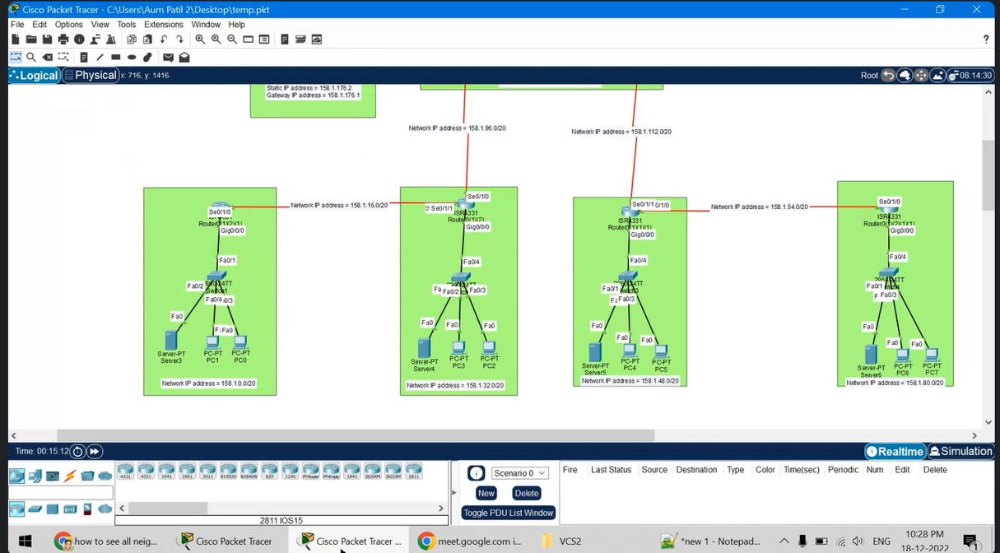

COLLEGE NETWORK DESIGN USING RIP AND AUTHENTICATION PROTOCOLS

DETAILED INFORMATION ABOUT PROJECT
- Designed a network using 15 subnets
- Made use of DHCP to assign ip for all end to end devices
- RIP protocol been used for packet tranfer
- For autentication made use of MD-5 algoritm
- tools used : cisco packet tracer